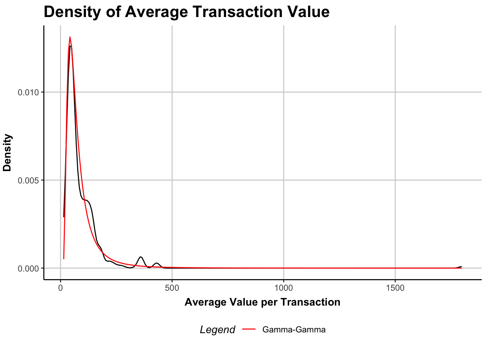

In my previous post on counting customers, I fit an example of a ‘buy-till-you-die’ (BTYD) model to a transaction log from an ecommerce retailer. The model offered insight into customer churn dynamics, even though attrition was latent (customers were free to churn at any time). In this next post in the series, I build upon the former model by introducing a spending component, capturing the monetary value of each customer’s transactional behaviors.
I previously explained the mechanics of BTYD models in an extended analogy. In a few words, these models provide mathematical architecture for two statistical processes. The first is churn: customers are continuously able to end their relationship with the company (or marketing channel), because relationships are not contractually structured. The second is purchasing: customers are able to make purchases at any time; these are the orders we directly observe in the company’s transaction log.
It is appropriate to ask questions of a BTYD model such as the size of the active customer base, relative to the original cohort. It is important when dealing with cohorts to note, they are defined by an acquisition window–for example, a week, a month, or a quarter. In the example I modeled, I considered the single cohort acquired during Q1 of 2024. I used the anonymous transaction log of an ecommerce retailer.
Conceptualizing Customer Spend
The questions posed above pertain to customer churn and purchasing tendencies. However, another very relevant question is what the value of purchases tend to be, monetarily. This is where we introduce a third process. Consider that from the perspective of a marketing manager, customers who spend little are worth less than those who spend more at each opportunity–airline companies frequently exploit this strategy when marketing to their cardholders and frequent flyers.
The spending process is different from the former two processes. Whereas churn and purchasing occur at intervals between events, making them timing-related processes, the spend process occurs on a scale of magnitude. We’re specifically interested in the quantity of spending, measured in dollars, at each opportunity.
Introducing the Gamma-Gamma Model
Models of magnitude are ubiquitous across statistics and machine learning. Popular approaches include linear regression, random forest, and deep learning-based methods, all estimating continuous quantities from a set of important predictors. A classic example is Zillow’s home price estimate; this model takes into account many characteristics about a property and outputs an expected sale price based on am exemplary set of home sales data.
But in the literature of marketing science, customers tend to be treated as distinct units. The difference between these two treatments is subtle but important. Customers are not like homes–customers have unique spending patterns, homes prices are the sum of many predictable factors (i.e., proximity to schools, square footage, number of bedrooms). Each time a customer places an order, we learn more about them. This kind of feedback loop allows for serial updating of our expectations about each customer; the same is not true of home values.
The spending model devised by the marketing scientists who developed the BTYD model is called the gamma-gamma.1 It is literally named after the statistical distribution known as the gamma distribution. The gamma distrbution is mathematically convenient and flexible. For example, the following curves are all gamma distributions with differences in a single parameter:
Figure 1: Examples of the Gamma Distribution in the context of customer spending tendencies.
In Figure 1, we can think of each curve as governing the spending values of an individual customer. The customer in blue has high spending tendencies; they spend, on average, $100. In contrast, the customer in red has low spend; they spend $10 on average. These are just hypothetical customers, though. The gamma-gamma model will yield realistic curves for each customer.
More important than predicting individual customers’ spending is describing the cohort in its enirety, by acknowledging heretogeneity. Heterogeneity is a model layer that assumes each customer’s spending is governed by a common distribution. How can that be? Consider these two statements:
Each customer has her own average transaction value, and actual spending varies systematically around that average (see Figure 1 for three customer examples).
The distribution of average transaction values across customers is statistically independent of the purchasing/churn process.
Together these two assumptions make the gamma-gamma model estimable. In the next section I will demonstrate estimation using the open-source CLVtools package.2
Estimating the Gamma-Gamma
I wont belabor points about data preparation again because I covered them in my previous post. However, one key difference in this pipeline is that I attempt to exclude commercial orders (any transactions with a quantity greater than 30).
Assuming we have a transaction log and adequately prepared our cohort data, we wish to estimate a gamma-gamma model for the monetary spending process at the customer level. This is easily achieved with the following R code:
The printed parameters govern the entire spend model, but they are not easily interpretable. It is more useful to examine an illustration of this model’s estimates:
Code
plot(spendQ1)

Figure 2: Distribution of average transaction values across customers, with Gamma-Gamma model overlay (red).
The \(x\)-axis of Figure 2 is the average spend per customer, across all transactions in the 18-month period (recall this cohort was acquired in Q1 2024 and followed until the end of Q2 2025). The \(y\)-axis is probability density; in other words, most customers have an average spend less than $100. This is reflected in both the emirical density (raw data, in black) and in the model density (gamma-gamma, in red). Generally speaking, this is a pretty good model fit, especially considering the parsimony of parameters (only three parameters to estimate).
Combining Models to Obtain CLV
Once we arrive at a working spend model, we can combine it with our earlier BTYD components, because we assumed the spend process to be independent.
Code
fitQ1 <-pnbd(clvQ1)print(fitQ1)
Pareto/NBD Standard Model
Call:
pnbd(clv.data = clvQ1)
Coefficients:
r alpha s beta
0.3031 23.7508 0.5776 6.4988
KKT1: TRUE
KKT2: TRUE
Used Options:
Correlation: FALSE
Our goal is to obtain individual CLV estimates for each customer. This is easliy achieved using a discount rate of 10% for future transactions. The result is a continuous prediction of CLV for each customer. Note these estimates are strongly associated with the probability of being an active customer:
Figure 3: The x-axis is the probability of an individual customer remaining active at the end of the period. The y-axis is the discounted residual lifetime value (CLV) for the customer’s expected future spending (note the log scale). We can easily see that customers with higher probability of active status tend to have higher CLV, but there is some variability within customers of a similar probability neighborhood.
Ranking Customers
Now that we obtained an estimate of the CLV for each customer, we can begin interrogating the estimates for patterns. For example, what makes for a customer with high CLV? To answer this, I sampled randomly from the top 1% of customers by CLV. I then plotted their transaction log history over the period:
Figure 4: Customers in the top 1% by CLV tended to make either frequent, modestly-sized purchases or irregular but larger purchases. See for example the customer in the sixth row from the bottom, who tended to make regular purchases of about $108. Meanwhile the customer in the bottom row made only three purchases, but two of the three were over $400.
Customers in the top 1% by CLV had identifiable purchasing patterns. On average, they made 8.62 purchases during the period. That equates to roughly one purchase every other month. Additionally, their purchasing size tended to be large, averaging $225.99 over the period. Looking back at Figure 2, that is a lot higher than the ‘typical’ customer, who tended to make purchases of about $50.
Limitations
The assumption of independent spending/purchasing tendencies may not be well-founded. For example, customers who spend more on each transaction may tend to make purchases less frequently. The modeling assumption of independence is generally a mathematical convenience making parameters easier to estimate. Yet many extensions exist. We could, for example, introduce customer-level covariates that explain part of the heterogeneity in behaviors (currently captured by gamma distributions). This is a bit beyond the scope of this blog post, but is computationally possible in the CLVTools package.